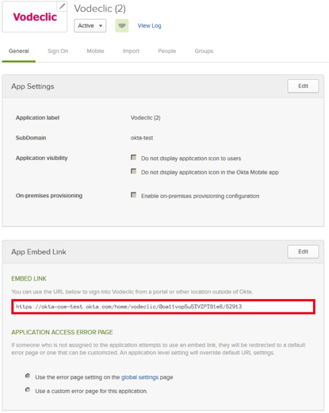

This setup might fail without parameter values that are customized for your organization. Please use the Okta Administrator Dashboard to add an application and view the values that are specific for your organization.
Send an email to Vodeclic Support and request that they enable SAML 2.0 for your account.
Attach the following:
The IDP SSO Target URL: To obtain this, in Okta, go to the Vodeclic app's General tab and copy the EMBED LINK, this is the IDP SSO Target URL:

The following x.509 Certificate: Sign into the Okta Admin Dashboard to generate this variable.
Vodeclic will process your request and after receiving a confirmation email from them, you can start assigning people to the application.
Done!
Notes:
IDP-initiated flows, SP-initiated flows, and Just In Time (JIT) Provisioning are all supported.
For SP-initiated flows, go to the home page of your Vodeclic instance, then select Sign in with Okta.